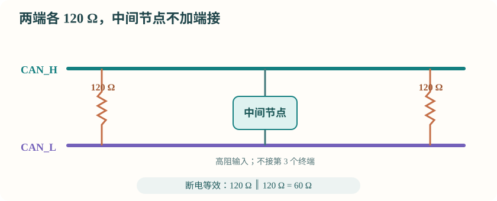

CHAPTER 15 · 差分端接与诊断
CAN 终端电阻：万用表读到 60 Ω，就一定接对了吗？
两个 120 Ω 并联是 60 Ω，听起来很容易。但电阻值正确只证明一种静态电气关系，并不能证明电阻位于主干两端，更不能替代高速波形检查。
关键区别：阻抗匹配关注行波在物理末端的反射，断电电阻测量关注直流并联通路；它们不是同一个测试。
120 Ω 是接在 CAN_H 与 CAN_L 之间，不是接在某根线与地之间
普通高速 CAN 使用差分双绞线，常见特性阻抗约为 120 Ω。在线型主干的两个物理末端，分别跨 CAN_H 与 CAN_L 放置一个与线缆阻抗接近的端接网络。这样可减小末端反射；中间节点通常不应再附加同样的终端负载。

分裂端接（split termination）可把一个 120 Ω 等效端接分成串联的两只约 60 Ω 电阻，中点按参考设计通过电容接到合适的参考地，用于改善共模噪声表现；并非任何板都必须采用，器件与 EMC 规范优先。
反射系数看阻抗；万用表看直流并联
对一段特性阻抗 Z₀ 的线缆，末端负载为 Rₗ 时，理想传输线的电压反射系数为：
当 Rₗ = Z₀ = 120 Ω 时，理论上 Γ = 0；开路近似 +1，短路近似 −1。这是理想末端模型，连接器、支路、器件电容与非理想边沿还会造成反射。
网络完全断电、没有其他显著并联直流通路时，两个跨线的 120 Ω 终端在电阻档下是并联关系：
显性差分电压若以 2 V 作教学假设，并假定每个端接两端电压都是 2 V，则单只 120 Ω 电阻耗散约 P = V²/R = 4/120 ≈ 0.033 W。这不是器件选型的额定功率要求：还应考虑故障、瞬态、电阻温升、环境与器件手册的限值。
多装一只终端，直流等效会变多少？
下面假设每只都是 120 Ω 且全部直接并联在 CAN_H/CAN_L 之间，不计收发器或保护器件内部电路。选择数量，检查理想直流读数。
终端数量与等效电阻
2 个 120 Ω 并联：理想等效 60 Ω。常见正常断电测量值约为 60 Ω。
| 跨线 120 Ω 数量 | 理想测量值 | 需要进一步排查的情况 |
|---|---|---|
| 0 | 开路（∞ Ω） | 也可能是测点与总线断线 |
| 1 | 120 Ω | 遗漏或断开一端，也可能有隐藏网络 |
| 2 | 60 Ω | 值正确仍可能放错位置 |
| 3 | 40 Ω | 多接了终端，或存在其他并联负载 |
正确的测试顺序：断电 → 电阻 → 位置 → 波形
- 完全断电再用电阻档：按设备安全流程隔离所有节点与可能存在的外部电源，确认适合断电测量后，在 CAN_H 与 CAN_L 之间读值。不要对带电总线直接使用欧姆档。
- 估算并联数量：约 60 Ω 常与两只 120 Ω 一致，约 120 Ω 可能少一只，约 40 Ω 可能多一只；低至近 0 Ω 优先排除短路，近无穷大优先排除断线。数值不能唯一定位原因。
- 核对物理末端：沿实际线束检查两个端接位置与隐藏的板载电阻/跳线，避免两个终端都安装在中间节点。
- 上电后看差分波形：用合适的差分探头或安全测量方法在最远节点观察振铃、过冲、显性与隐性判决裕量，并结合 CAN 控制器错误计数、重发和负载率判断。
60 Ω 是很有用的快速筛查，却不是“布线和端接都正确”的最终判据。
参考资料
- Texas Instruments：可配置 CAN 总线终端参考设计（两端端接与物理布线）
- Texas Instruments：CAN 总线与 120 Ω 端接说明
- Texas Instruments：标准与分裂端接波形示例（分裂端接需按具体器件参考设计实现）
反射系数、并联等效与耗散功率是理想模型的推导；示例不构成具体硬件故障的诊断结论。